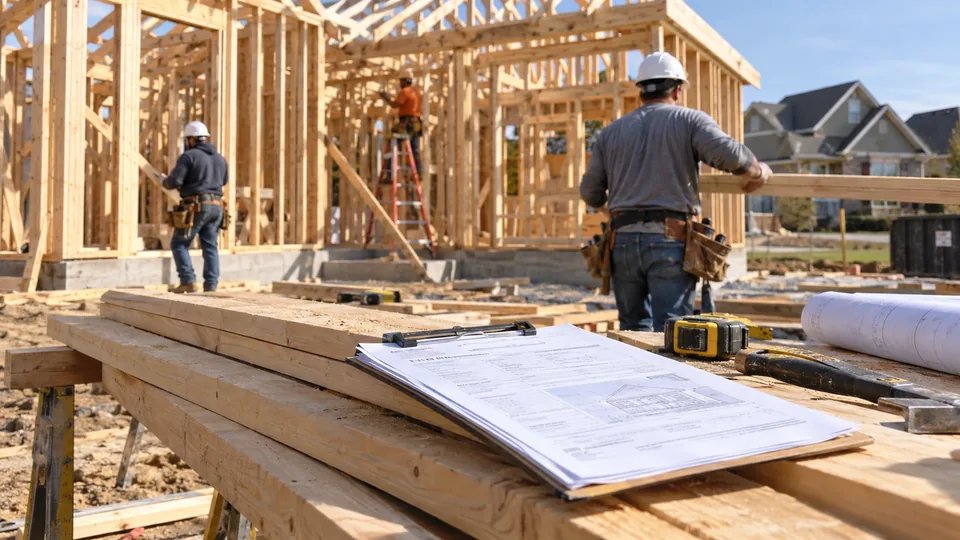

Housing Permits, Starts and Sentiment Measure Different Stages
Construction data show authorized and begun projects. Builder surveys add expectations, while financing and regional conditions shape follow-through.

Housing permits, starts, completions and builder confidence describe different stages of the same industry. They can move in opposite directions without contradicting one another. An improving outlook does not instantly produce completed homes, and a rise in completed apartments can reflect construction decisions made much earlier.
Reading the measures together helps identify where a change is occurring: future intentions, work beginning, supply reaching the market or sentiment among builders. Combining them into a single claim that “housing is up” can hide distinctions that matter for employment, materials demand and the availability of homes.
Follow the construction sequence
A building permit records authorization in a permit-issuing jurisdiction. It does not guarantee that construction will begin immediately or that the project will be completed. Financing, demand, infrastructure and a developer's choices can delay or prevent the next step.
For the Census Bureau's construction statistics, a start generally occurs when excavation begins for a building's footings or foundation. In a multifamily structure, the units are counted as started when that building reaches the relevant stage. A single large apartment project can therefore move the unit total substantially without representing hundreds of separate new construction sites.
Completions identify a later stage. A rise in completed supply may reflect projects started during an earlier period of easier financing or stronger demand. It cannot be used by itself to establish that developers are currently becoming more willing to begin new projects.
The annual rate is not the month's actual count
US housing headlines commonly use seasonally adjusted annual rates. These express the adjusted monthly pace as if it continued for a year. A reported annual rate of 1.2 million starts does not mean 1.2 million homes began construction during that month.
As a simplified illustration, dividing 1.2 million by 12 gives an adjusted monthly pace of 100,000 units. That calculation does not reconstruct the actual unadjusted count, because seasonal factors distinguish the reported annualized rate from the raw monthly observation. Use the published unadjusted tables when the question concerns how many units actually started in a period.
The same distinction affects change calculations. A move from an annualized 1.2 million to 1.26 million is a 5% increase in the reported pace. It is not an additional 60,000 actual starts in that single month. Stating the unit and adjustment prevents a large misunderstanding from a small headline.
Single-family and multifamily can tell different stories
Apartment buildings create more month-to-month volatility because individual projects contain many units. A sharp increase in multifamily starts can lift the overall figure even while single-family construction weakens. The implications for builders, materials and eventual supply differ across those categories.
Suppose hypothetical annualized single-family starts fall from 900,000 to 850,000 while multifamily starts rise from 300,000 to 450,000. Total starts increase from 1.2 million to 1.3 million, yet the single-family segment declines. A report saying every part of residential construction improved would be incorrect.
Regional differences also matter. A national increase can be concentrated where population, weather or land availability supports building. That does not establish the same outlook for a company operating mainly in another region. Compare the geography and business model before applying a national statistic to individual corporate earnings.
Builder confidence is a survey, not a construction count
The NAHB/Wells Fargo Housing Market Index combines builders' assessments of current single-family sales, expected sales over six months and prospective-buyer traffic. Its methodology assigns different weights to those components. It is therefore neither an unweighted opinion poll nor a measure covering every form of residential development.
A reading above 50 indicates a balance of favorable over unfavorable assessments in the index's construction. It does not mean sales rose 50% or that half of authorized homes were completed. The HMI's survey panel and focus differ from the Census Bureau's construction statistics.
Confidence can improve before starts if builders expect financing or demand to recover. It can also improve without a subsequent increase if those expectations fail to materialize. Comparing expectations with later starts and sales helps test the story rather than assuming the survey has already recorded an outcome.
Connect financing with the right stage
Mortgage costs affect buyer affordability, while developers also face their own construction and land-financing costs. Changes in either can alter a project's economics. A builder offering incentives may sustain sales while accepting a lower margin, so unit demand alone cannot explain profitability.
The link with interest-rate transmission is important, but it does not produce a fixed timetable. Existing commitments, labor availability and local approvals can slow the response. A decline in rates may support intentions before it changes completed supply.
Revisions and sampling uncertainty provide another reason to avoid overreading one month. Compare several observations, the single-family and multifamily breakdowns, and the stage each series measures. The most useful housing account explains how intentions become construction and supply, while recognizing where that process is being delayed or redirected.
Sources and methodology (4)
Primary references for definitions and methodology. All numerical teaching examples in this article are hypothetical and are not current prices, forecasts or actual company results.
TTN analysis for informational purposes. This article is not investment, tax or legal advice.